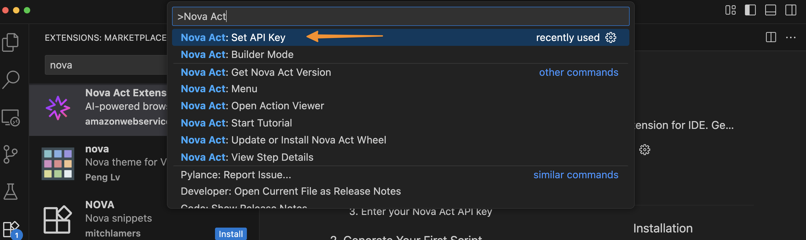
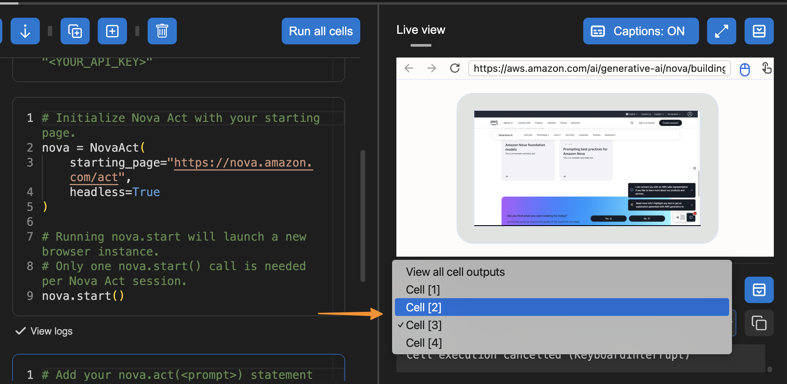
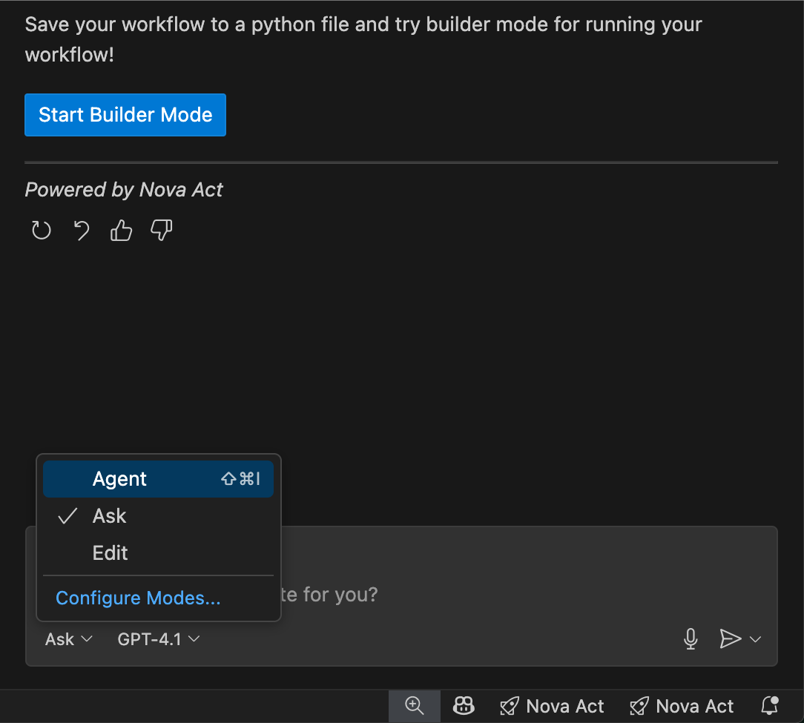

Tăng tốc phát triển tác nhân AI với tiện ích mở rộng Nova Act IDE
Tác giả: Donnie Prakoso
Đăng vào lúc: September 23, 2025
Chủ đề: Amazon Nova, Announcements, Developer Tools, Launch, News
Hôm nay, tôi rất vui được giới thiệu Nova Act extension — một tiện ích giúp đơn giản hóa quá trình xây dựng các tác nhân tự động hóa trình duyệt mà không cần rời khỏi IDE của bạn. Nova Act extension tích hợp trực tiếp vào các IDE như Visual Studio Code (VS Code), Kiro và Cursor, giúp bạn tạo các tác nhân tự động hóa web bằng ngôn ngữ tự nhiên với mô hình Nova Act.
Dưới đây là hình minh họa nhanh về Nova Act extension trong Visual Studio Code:

Nova Act extension được xây dựng dựa trên Amazon Nova Act SDK (preview), bộ SDK dành cho tác nhân tự động hóa trình duyệt. Tiện ích này thay đổi cách xây dựng workflow truyền thống bằng cách loại bỏ việc phải chuyển đổi ngữ cảnh giữa môi trường viết mã và môi trường kiểm thử. Giờ đây, bạn có thể xây dựng, tùy chỉnh và kiểm thử các script agent đạt chuẩn sản xuất — tất cả ngay trong IDE — với các tính năng như tạo mã bằng ngôn ngữ tự nhiên, chỉnh sửa theo cell dạng notebook, và kiểm thử trình duyệt tích hợp. Trải nghiệm thống nhất này giúp tăng tốc phát triển cho các tác vụ như điền form, tự động hóa QA, tìm kiếm và các workflow nhiều bước phức tạp.
Bạn có thể bắt đầu với Nova Act extension bằng cách mô tả workflow bằng ngôn ngữ tự nhiên để nhanh chóng tạo script agent ban đầu. Sau đó tùy chỉnh bằng chế độ Builder dạng notebook để tích hợp API, dữ liệu, xác thực, rồi kiểm thử bằng công cụ chạy cục bộ mô phỏng điều kiện thực tế — bao gồm debug từng bước trong các workflow dài.
Bắt đầu với Nova Act extension
Trước tiên, tôi cần cài đặt Nova Act extension từ Extension Marketplace của IDE.
Tôi đang sử dụng Visual Studio Code, và sau khi chọn Extensions, tôi gõ “Nova Act”, chọn tiện ích và nhấn Install.

Để bắt đầu, tôi cần lấy API key. Tôi truy cập trang Nova Act và làm theo hướng dẫn để lấy API key. Tôi chọn Set API Key bằng cách mở Command Palette với:
Press Cmd+Shift+P / Ctrl+Shift+P

Sau khi nhập API key, tôi có thể thử Builder Mode. Đây là chế độ builder dạng notebook chia một script phức tạp thành các cell riêng biệt, giúp kiểm thử và debug từng bước trước khi chuyển sang bước tiếp theo.
Tại đây, tôi có thể dùng Nova Act SDK để xây dựng agent. Bên phải là Live View để xem trước hành động của agent trên trình duyệt và Output panel để xem log, bao gồm quá trình suy nghĩ và hành động của mô hình.

Để kiểm thử tiện ích, tôi chọn Run all cells. Một cửa sổ trình duyệt mới sẽ mở và thực thi dựa trên prompt đã cung cấp.

Tôi chọn Fullscreen để xem cách tự động hóa trình duyệt hoạt động.

Một tính năng hữu ích khác là tôi có thể chọn một cell trong Output panel để xem log của riêng cell đó — rất hữu ích cho việc debug.

Tôi cũng có thể chọn một template để bắt đầu.

Ngoài Builder Mode, tôi cũng có thể chat với Nova Act để tạo script. Tôi chọn Generate Nova Act Script và tiện ích sẽ mở cửa sổ chat và tự động tạo script cho tôi.

Sau khi hoàn tất script, tôi chọn Start Builder Mode, và tiện ích sẽ tạo file Python ở chế độ Builder. Bạn có thể chuyển đổi linh hoạt giữa Chat và Builder Mode.

Trong giao diện chat, tôi thấy ba chế độ workflow:
- Ask: mô tả tác vụ bằng ngôn ngữ tự nhiên để tạo script
- Edit: tinh chỉnh hoặc tùy chỉnh script
- Agent: chạy, giám sát và tương tác với agent

Tôi cũng có thể thêm Context để cung cấp thông tin liên quan như tài liệu đang mở, hướng dẫn, lỗi, tài nguyên MCP hoặc một ảnh chụp màn hình cửa sổ hiện tại — giúp agent hiểu rõ yêu cầu cụ thể.

Tiện ích còn cung cấp nhiều template dựng sẵn khi nhập dấu / trong cửa sổ chat.

Các template bao gồm:
- /shopping: tự động hóa tác vụ mua sắm
- /extract: trích xuất dữ liệu
- /search: tìm kiếm và thu thập thông tin
- /qa: tự động hóa kiểm thử
- /formfilling: điền form và nhập liệu
Nova Act extension trở thành một công cụ full-stack agent builder, cho phép bạn prototyping, tùy chỉnh và kiểm thử toàn diện — tất cả trong một IDE.
Những điều cần biết
- IDE hỗ trợ: VS Code, Cursor, Kiro (sẽ mở rộng thêm)
- Mã nguồn mở: Apache 2.0
- Miễn phí: Không tính phí khi sử dụng
Bắt đầu bằng cách cài đặt extension trong IDE hoặc xem tài liệu tại GitHub:
👉 https://github.com/aws/nova-act-extension
Authors

Donnie Prakoso
Donnie Prakoso là một kỹ sư phần mềm, barista “tự phong”, và Principal Developer Advocate tại AWS. Với hơn 17 năm kinh nghiệm trong ngành công nghệ, từ viễn thông, ngân hàng đến các startup, anh hiện tập trung vào việc hỗ trợ các nhà phát triển hiểu và ứng dụng nhiều công nghệ khác nhau để biến ý tưởng thành hiện thực. Anh yêu cà phê và thích thảo luận mọi chủ đề — từ microservices cho đến AI/ML.